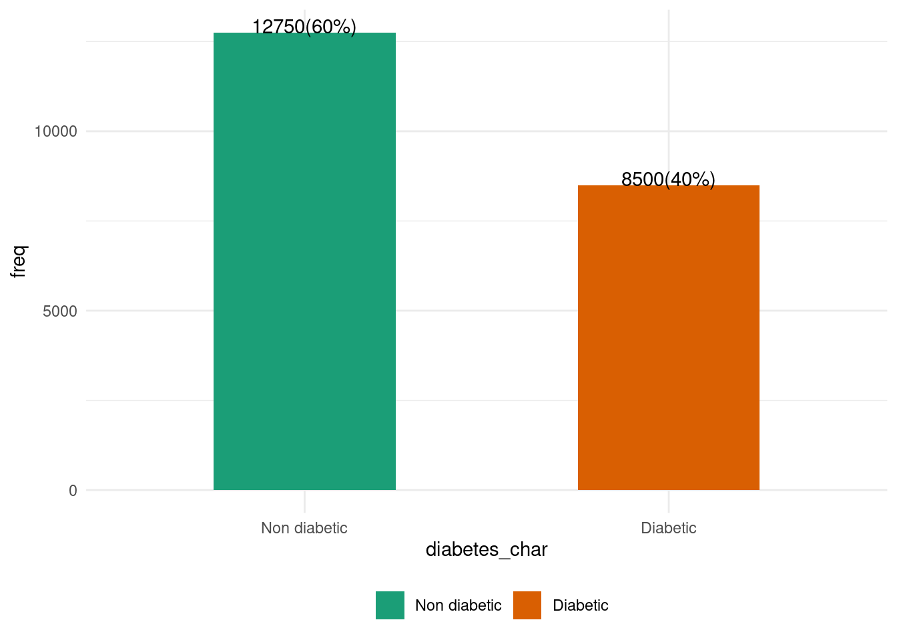

library(tidyverse)
library(tidymodels)
library(data.table)
library(gtsummary)
library(mTools)Diabetes Prediction using Tidymodels
diabetes_df_all <- fread("data/diabetes_prediction_dataset.csv")Data processing
diabetes_df_all[, diabetes_char := factor(diabetes,
levels = c(0, 1),
labels = c("Non diabetic", "Diabetic"))]
re_balance_class <- function(df, outcome_col = "diabetes_char", pos_class = "Diabetic", pos_class_perc = .4){
pos_class_df = df[get(outcome_col) == pos_class]
neg_class = df[get(outcome_col) != pos_class]
pos_perc = nrow(pos_class_df)/nrow(df)
N = round(nrow(pos_class_df)/pos_class_perc)
Nneg = N - nrow(pos_class_df)
neg_class_df = neg_class[sample(1:.N, Nneg)]
rbind(pos_class_df,neg_class_df )
}
diabetes_df = re_balance_class(df = diabetes_df_all)Summary Stats
library(ggiraph)
db_perc <- diabetes_df[, .(freq = .N),
by = diabetes_char][
,perc := round(freq/sum(freq) * 100, 1)]
ggplot(db_perc, aes(diabetes_char, freq, fill = diabetes_char))+
geom_bar_interactive(width = 0.5, stat = "identity")+
geom_text(aes(label = paste0(freq, "(", perc, "%)")),
position = position_dodge(width = 0.5),
vjust = 0.05)+
scale_fill_brewer(name = "", type = "qual", palette = "Dark2")+
theme_minimal()+
theme(
legend.position = "bottom"
)
tab2 <- diabetes_df %>%
tbl_summary(
by = diabetes_char,
type = all_continuous() ~ "continuous2",
statistic = all_continuous() ~ c(
"{mean} ({sd})",
"{median} ({p25}, {p75})",
"[{min}, {max}]"
),
missing = "ifany"
) %>%
add_p(pvalue_fun = ~ style_pvalue(.x, digits = 2))
tab_df = as.data.frame(tab2)
nms <- names(tab_df)
nms <- gsub("\\*", "", nms)
names(tab_df) <- nms
data_table(tab_df)Model Fitting
set.seed(100)
diabetes_df[, diabetes:= as.factor(diabetes)]
diabetes_df_split <- initial_split(diabetes_df[,.SD, .SDcols = !"diabetes_char"],
strata = diabetes)
diabetes_df_train <- training(diabetes_df_split)
diabetes_df_test <- testing(diabetes_df_split)# Specify a logistic regression model
logistic_model <- logistic_reg() %>%
# Set the engine
set_engine('glm') %>%
# Set the mode
set_mode('classification')
# Fit to training data
logistic_fit <- logistic_model %>%
fit(diabetes ~ .,
data = diabetes_df_train)
# Print model fit object
logistic_fit %>%
DT_tidy_model()xgb_spec <- boost_tree(
trees = 2000,
tree_depth = tune(),
min_n = tune(),
loss_reduction = tune(), ## first three: model complexity
sample_size = tune(),
mtry = tune(), ## randomness
learn_rate = tune() ## step size
) %>%
set_engine("xgboost") %>%
set_mode("classification")
xgb_specBoosted Tree Model Specification (classification)
Main Arguments:
mtry = tune()
trees = 2000
min_n = tune()
tree_depth = tune()
learn_rate = tune()
loss_reduction = tune()
sample_size = tune()
Computational engine: xgboost